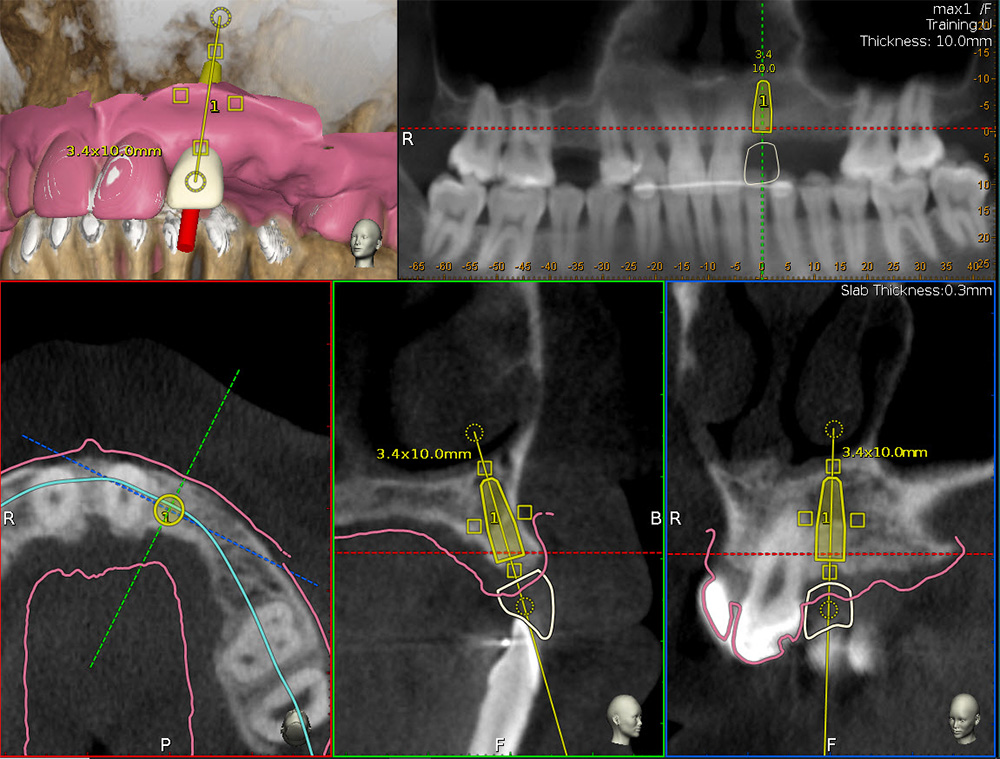
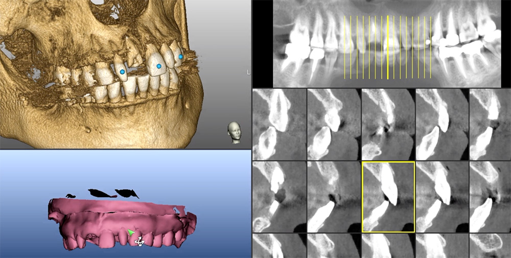
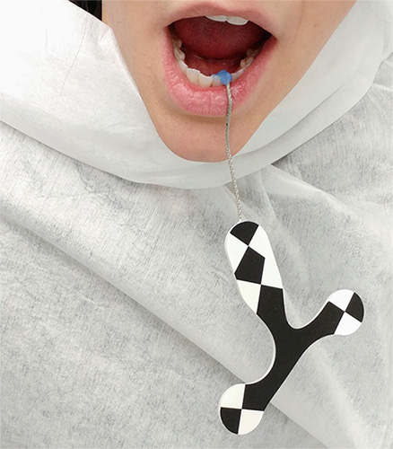
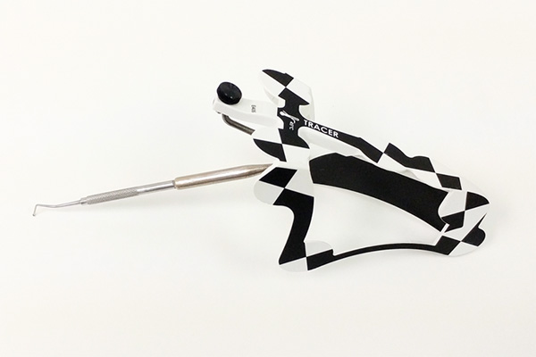
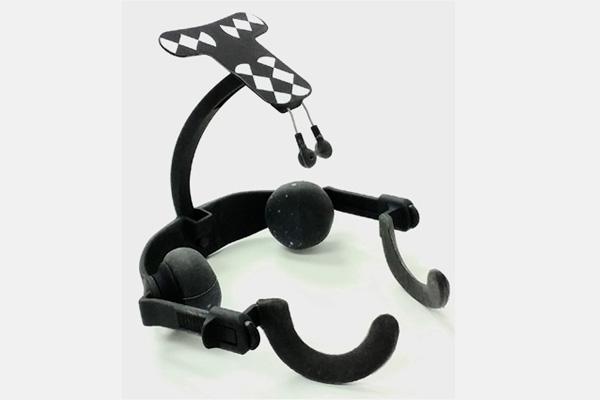
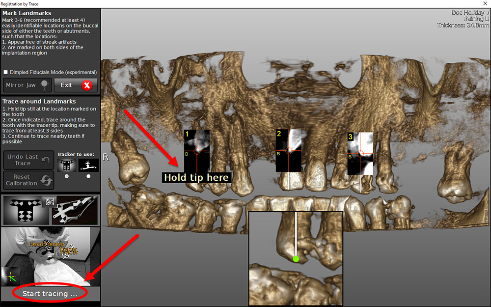
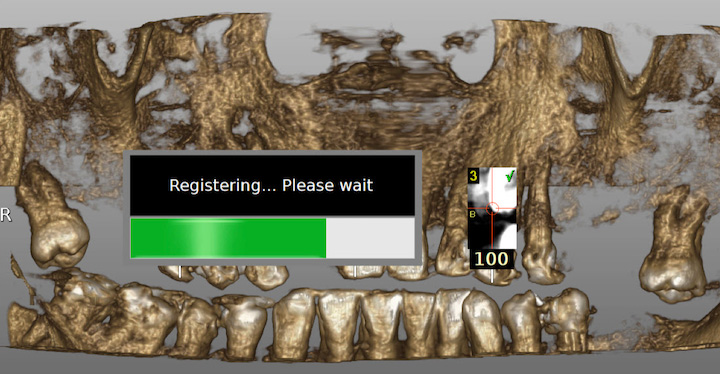
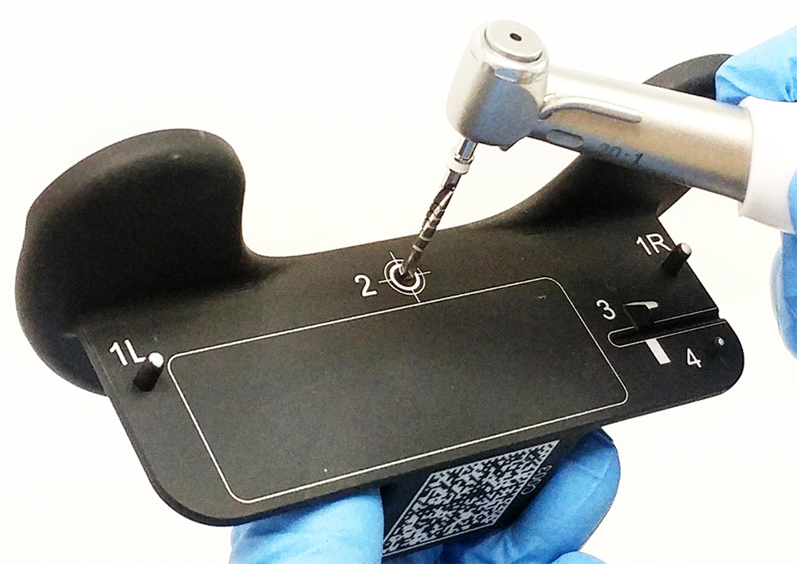
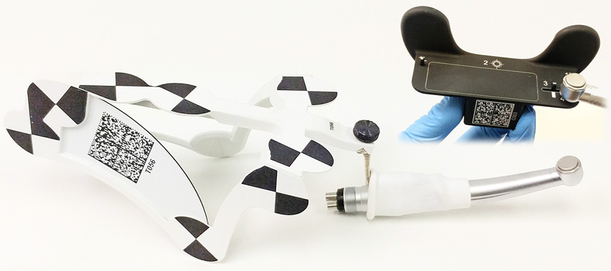

?
- Highlights
- Dental Implantology
- Prosthetics
- Regenerative Products
-
Robotic Navigation


Navident
- Photogrammetry
- Resources
- About Us
Dynamic Navigation: Precision Implant Surgery Dynamic Navigation is the most effective means by which to accurately transfer a planned implant position to a patient. In contrast to the inherent inaccuracy of Freehand and Static Navigation, Dynamic Navigation software algorithms direct the surgeon to angulate and orient the osteotomy drill using realtime feedback. The surgical path can be modified during treatment and the use of Dynamic Navigation in such situations as limited opening is unparalleled. It is equally as exacting with dentate and anodentate jaws.
Implant dentistry demands precision placement of the fixture. Ideal location and position, dimension (length and diameter) and depth and angulation are mandated for positive treatment outcomes. Restoratively driven implant placement is paramount for the overall integrity of the dentition. Thus, it is essential to first visualize the final prosthesis in place in order to determine the type and number of implants necessary to support the intended prosthesis based on residual bone volume [Figures 1a, 1b].

Figure 1a

Figure 1b

Historically, image-guided surgical registration required the use of fiducials to map the maxilla or the mandible to the cbCT scan. TaP registers high-contrast surfaces present in the data set obviating the need for a stent or clip attached to or positioned between the maxilla and mandible.
TaP uses a Tracer Tool and Tag [Figure 2], Jaw Tracker [Figure 3] or a Head Tracker [Figure 4]. The Jaw Tracker in the mandible (or maxilla) or the Head Tracker in the maxilla are detected and triangulated by the optical sensor and thus always in sync regardless of how the head is positioned.
figure 2


figure 3
figure 4
Three to six stable structures (non-colinear teeth or bone screws in edentulous jaws) are chosen. The software algorithms prompt the user to hold the Tracer Tool on the marked structures as close to the landmark position as possible.

figure 5a
The Tracer Tool is moved around the landmark (only the tip should contact the tooth). A sound denotes the counter reaching 100, a percentage the points contacted. When trace registration is completed, the jaw structure has been mapped to the cbCT data set [Figure 5b].

figure 5b
The handpiece (product agnostic) is attached to a Drill Tag and the drill axis and drill tip are calibrated. This ensures that the spatial correlation of the drill axis and the drill tip is exact. The optical sensor is able to track and triangulate the tags (on patient, on tracer, on drill) at any time from the moment the sensor is ON. The difference is that after Calibration of the instruments and Registration of patient to the CBCT scan – the system can now show, in real-time, and continuously, the location of the drill in the patient [Figure 6a, 6b]

figure 6a

figure 6b
The navigation screen is active when the system identifies the calibrated instrument as it approaches the patient’s jaw. The target view measures the distance between the instrument’s tip and central axis of the designated access penetration point, the glide path or the osteotomy. The central axis length of the planned procedure is represented by the center of the static white target, the tip of the drill is indicated by the moving black cross following the drill tip movement. The real-time direction of the drill is represented as a cone in the head of the handpiece [Figure 7].
figure 7
TaP registration is more time and treatment efficient and effective than traditional stent protocols. Scans can be taken with the jaws in occlusion (no stent to separate them) for improved crown planning. Stents or clips do not impede handpiece access to space restricted locations and most importantly, dynamic guided surgery enables changes to the treatment plan intra-operatively.